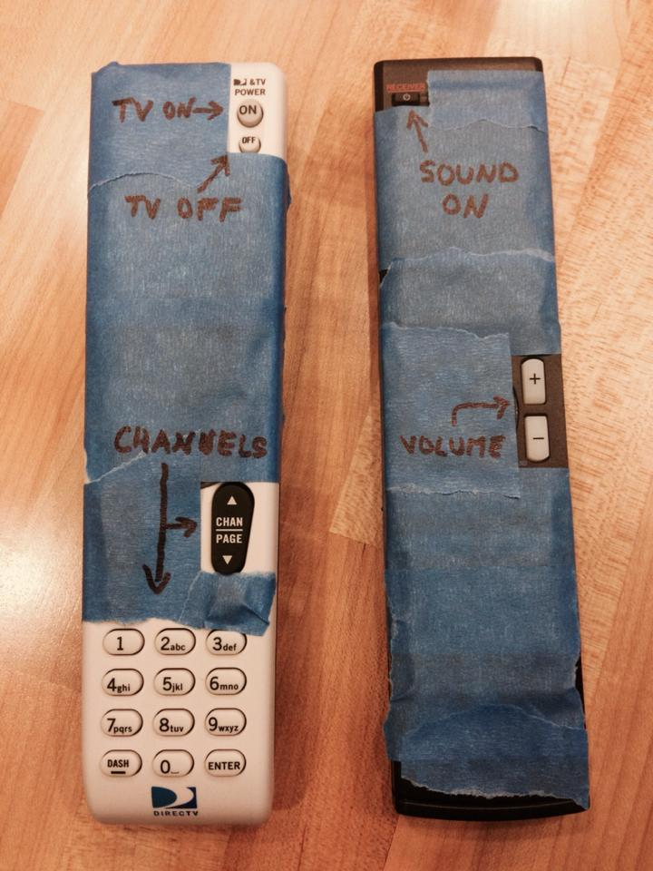

R.version.string[1] "R version 4.6.0 (2026-04-24)"BiocManager::version()[1] '3.23'
This class is hosted on GitHub, and we will use the git program and GitHub accounts to distribute lecture notes and code. We talked about RStudio, git and GitHub in class, but to review:
git is a program for version control (mostly useful for plain text documents)git repositoriesGitHub and BitBucket both offer free public or private repositories. GitHub seems to be more popular for open source projects.
You can start a git repository (repo) by either cloning an existing repo (as you will do for this course), or initializing a repo from scratch.
We want to clone the course repo in RStudio, but first, we may need to install or upgrade the software on your computer. We need to do the following steps:
We will use R version 4.6 which is paired with Bioconductor 3.23. If you don’t have Bioconductor installed that is fine, we will do this in a later class.
R.version.string[1] "R version 4.6.0 (2026-04-24)"BiocManager::version()[1] '3.23'The first step can be done by visiting CRAN, and clicking the appropriate link for your operating system. When you load R, you want it to say that R is version 4.6 when you type sessionInfo().
The second step can be done by visiting the RStudio website.
The third and fourth step are best accomplished by following the instructions at the happygitwithr website. You should follow the instructions at the link above to: register a GitHub account, install git, introduce yourself to git, set up keys for SSH, connect RStudio to Git and GitHub.
This class has two “views” you might say. The HTML/website version and the GitHub version which has all the “source” Rmarkdown files. From the GitHub version, you can poke around, and click on Rmarkdown files, even see the history of the code. If you want to look at the raw text for a quarto file (.qmd), you can click the Raw link on the top of the document.
To clone the class repo, you should go to the GitHub version of this class and look for a green link that says “Clone or download”. You should copy the link that appears to the clipboard.
Now, open RStudio, and follow the menu items: File > New Project > Version Control > Git. You will paste the link from the previous step into the box that says “repository URL”. You can set the project directory name to compbio.
Following this, you should see a number of directories, which contain quarto files (.qmd) in the Files panel on the lower right hand side. And there will be a git tab in the top right panel. The git tab will allow you to pull down new material as the course goes on and homeworks are posted to the course repo.